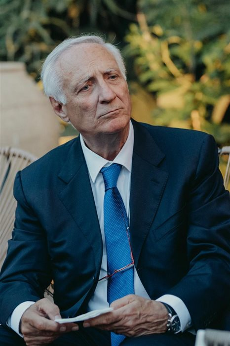
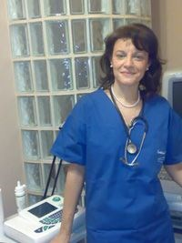
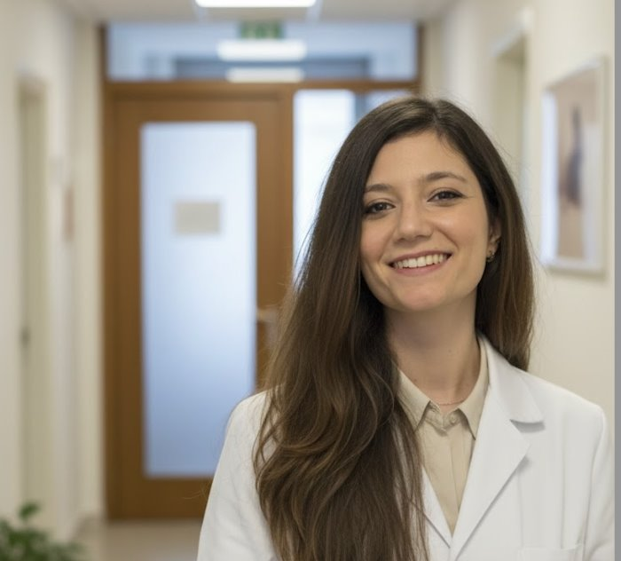
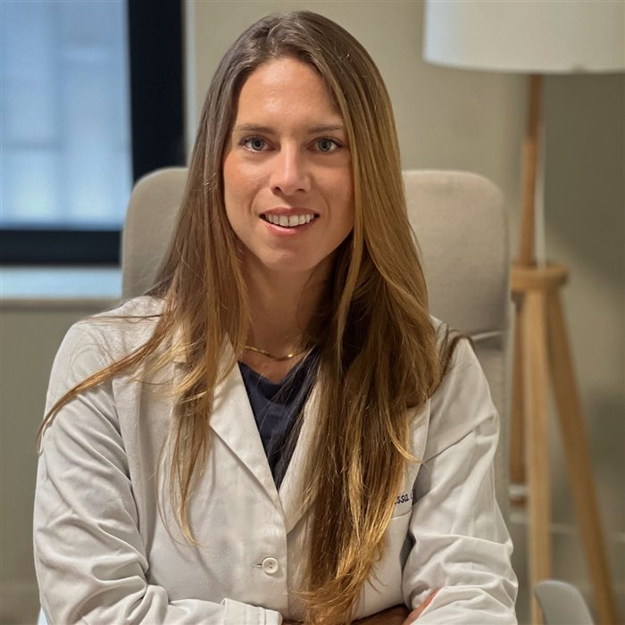
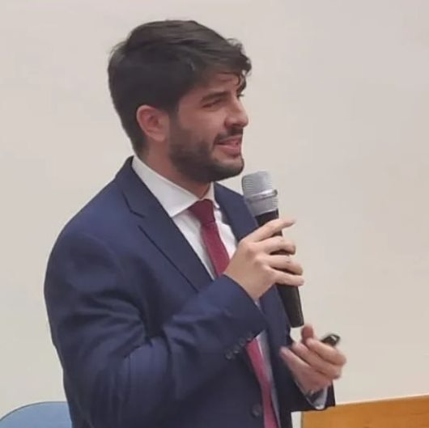
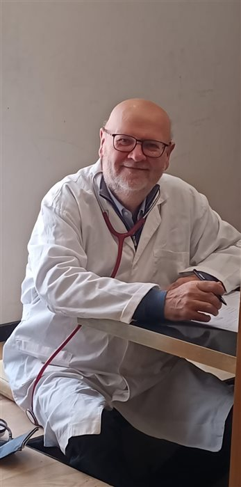

Un team di specialisti che collabora quotidianamente per offrirti percorsi di cura integrati, sotto lo stesso tetto.

Responsabile della direzione sanitaria della struttura, garantisce la conformità delle prestazioni erogate alle normative vigenti e agli standard di qualità del Poliambulatorio.

Si occupa di prevenzione e diagnosi delle patologie cardiovascolari, con particolare attenzione ai percorsi di screening e follow-up.

Specialista in disturbi ormonali, metabolici e tiroidei, con approccio integrato tra endocrinologia e impostazione dietologica.
Consulente nutrizionale, si occupa di percorsi alimentari personalizzati e valutazione dello stato nutrizionale.

Si dedica alla diagnosi e al trattamento delle patologie dell'apparato muscolo-scheletrico, dal trauma acuto al follow-up post-operatorio.
Si occupa di trattamento osteopatico manipolativo, con approccio integrato in sinergia con l'area ortopedica per il riequilibrio posturale e muscolo-scheletrico.

Specialista in patologie di orecchio, naso e gola, con competenze diagnostiche audiologiche complete.

Si occupa della valutazione e del monitoraggio delle patologie del sangue e del sistema linfatico.
Specialista nella diagnosi precoce e nel follow-up delle patologie infiammatorie e degenerative dell'apparato articolare.
Si occupa di sorveglianza sanitaria e visite di idoneità alla mansione, ai sensi del D.Lgs. 81/08, anche per convenzioni aziendali.
Il primo punto di contatto della struttura: gestisce prenotazioni, accoglienza e informazioni per i pazienti.
Scrivici su WhatsApp indicando il nome del medico o la branca di tuo interesse: ti aiuteremo a trovare il primo appuntamento disponibile.
Prenota su WhatsApp